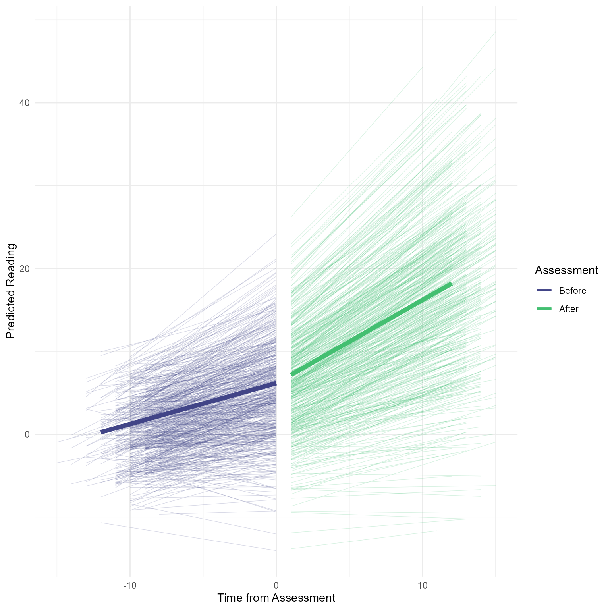
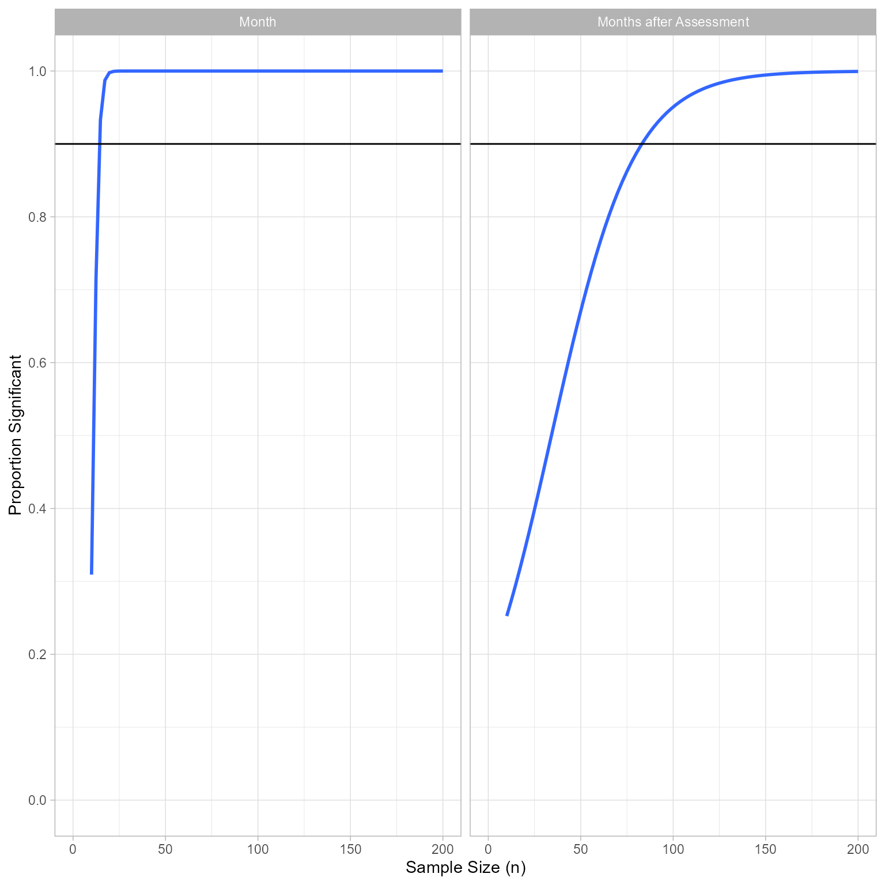
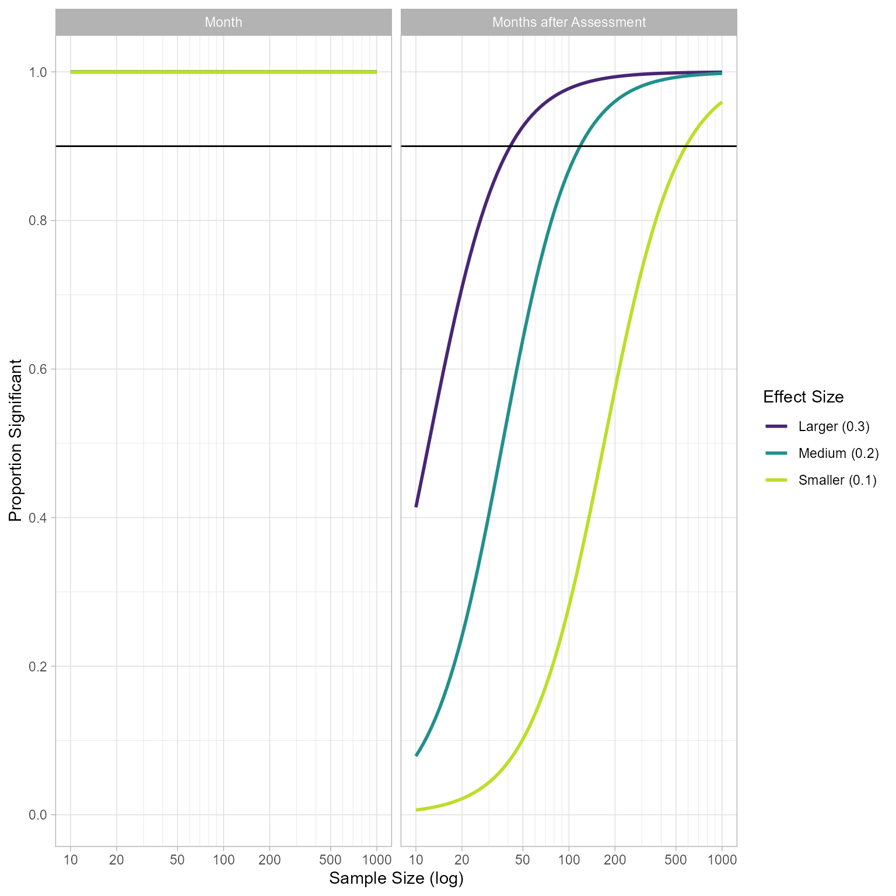

# Load packages
library(tidyverse)
library(mvtnorm)
library(lme4)
library(lavaan)
library(broom)
library(easystats)
make_data <- function(
n = 100, # Sample size (number of students)
# Fixed effects
b_00, # fixed intercept
b_10, # fixed slope for month
b_20, # fixed slope for moths after assessment
# Level-2 random effects covariance matrix
tau_00, # variance of random intercept
tau_11, # variance of slope for month
r_01, # correlation between random intercept and slope
sigma_e = 2, # Level-1 random effect standard deviation
k_months_total = 24, # Total months of study
k_months_before = 4, # Months before study
k_months_delay = 2 # Average delay before assessment
) {
tau <- matrix(c(tau_00, tau_00 * tau_11 * r_01,
tau_00 * tau_11 * r_01, tau_11),
nrow = 2)
# Level-2 random effects
e_2 <- mvtnorm::rmvnorm(n, mean = c(e_0i = 0, e_1i = 0), sigma = tau) %>%
as_tibble()
# Student-level data (Level 2)
d_2 <- tibble(student_id = 1:n) %>%
bind_cols(e_2) %>%
mutate(
b_0i = b_00 + e_0i,
b_1i = b_10 + e_1i,
b_2i = b_20,
assessment_month = k_months_before + rpois(n, lambda = k_months_delay),
k_months_total = k_months_total
)
# Occasion-level data (Level 1)
d_1 <- d_2 %>%
uncount(k_months_total) %>% # make copies of each row
mutate(month = row_number() - 1, .by = student_id) %>% # Make months by group row number
mutate(
months_after_assessment = ifelse(month < assessment_month,
0,
month - assessment_month),
e_ij = rnorm(nrow(.), 0, sigma_e),
reading = b_0i + b_1i * month + b_2i * months_after_assessment + e_ij
)
}Major Steps for Power Analysis Via Simulation
- Specify Model
- Create a Data Generator Function that Creates a Single Data Set
- Create a Model Fitting Function
- Create a Detect Effect Function
- Generate Many Data Sets with Varying Sample Sizes
- Test the Model on Each Data Set
- Plot the Relation Between Sample Size and the Probability of Detecting the Effect.
Our Study’s Rationale
When a student persistently fails to learn to read (or write or calculate or …), we generally want to do something different so that the child’s learning trajectory changes. Traditionally, school psychologists conducted comprehensive psychoeducational assessments to find out what was holding the student back and then specify recommended interventions. These assessments included measures of cognitive abilities, personality, psychopathology, and academic skills. It involved interviewing students, parents, and teachers as well as direct observations in the classroom. Unfortunately, such assessments are costly in terms of time, resources, and personnel. Furthermore, it has always been assumed that a comprehensive assessment is useful, but the treatment utility of assessment has not generally be demonstrated.
Instead of performing a comprehensive assessment, one can simply measure whether a student is behind academically and administer empirically-validated interventions designed to remediate any academic skill deficits. This approach is efficient and works well for most students. However, there is a smaller group of students for whom this approach results in repeated failure to respond to intervention.
What should we do with students who repeatedly fail to respond to intervention. One option is to select a different empirically-validated intervention and try again. Sometimes this will work, and sometimes another treatment failure will occur. A second option is to try a comprehensive assessment to figure out what is going on. If comprehensive assessments are helpful, we should see a higher likelihood of treatment response after the assessment.
Study Design
To make this tutorial easier to follow, I am going to make my assumptions much simpler than I would if I were planning a real study. Please know that I understand that student learning is much more complicated than the study I propose here.
Our task is to design an experiment that would reveal whether comprehensive assessments have any effect on student learning. We would like to plan our study so that we are likely to find the effect of comprehensive assessments if it exists, but also conserve resources by making the study as small and as short as we can.
Let’s say that the learning domain is reading comprehension. Let’s assume that every month students are given an assessment of their reading comprehension ability. On average, most students make one month of progress each assessment. However, we have a sample of children who are not making adequate progress. Every month, they are making about .25 months of progress. So their growth rate, on average is .25, and we expect a growth rate of 1.
To qualify for the student, the students must have 4 months of slow progress. Thus, we will have data for 4 months prior to the assessment.
Specify Model
Level 1: Measurement Occasion
Although the model can appear complicated, the idea here is simple: At first reading grows slowly each month. Once an assessment has occurred, the reading growth rate is faster.
\begin{align*} Reading_{ti} &= b_{0i}+b_{1i}Month_{ti}+b_{2i}MonthsAfterAssessment_{ti}+e_{ti}\\ e_{ti}&\sim\mathcal{N}(0, \sigma_e^2) \end{align*}
| Variable | Interpretation |
|---|---|
| Reading_{ti} | The measure of Reading Comprehension for person i at month t. |
| b_{0i} | The predicted level of Reading Comprehension for person i at month 0. |
| Month_{ti} | The number of months elapsed for person i at month t. |
| b_{1i} | The pre-assessment growth rate in reading comprehension for person i at month t. |
| MonthsAfterAssessment_{ti} | The number of months after the assessment for person i at month t. |
| b_{2i} | The degree to which assessment increases growth rate in reading comprehension for person i at month t. |
| e_{ti} | The deviation from expectations for Reading Comprehension at occasion t for person i. It represents the model’s failure to accurately predict Reading Comprehension at each measurement occasion. |
| \sigma_e^2 | The variance of e_{ti} |
Level 2: Student
For the sake of simplicity, the model does not include any student-level predictors.
\begin{align*} b_{0i} &= b_{00}+e_{0i}\\ b_{1i} &= b_{10}+e_{1i}\\ b_{2i} &= b_{20}\\ \boldsymbol{e}_2 &= \begin{bmatrix}e_{0i}\\e_{1i}\end{bmatrix}\\ \boldsymbol{e}_2&\sim\mathcal{N}\left(\boldsymbol{0},\boldsymbol{\tau}\right)\\ \boldsymbol{\tau} &= \begin{bmatrix}\tau_{00} & \tau_{10} \\ \tau_{10} & \tau_{11}\end{bmatrix} \end{align*}
| Variable | Interpretation |
|---|---|
| b_{0i} | The predicted level of Reading Comprehension for person i at month 0. |
| b_{00} | The overall predicted value of Reading Comprehension at month 0. |
| e_{0i} | Person i’s deviation from expectations for the random intercept. It represents the model’s failure to predict each person’s random intercept. |
| b_{1i} | The pre-assessment growth rate in reading comprehension for person i at month t. |
| b_{10} | The rate at which Reading Comprehension increases for each month if no assessment has occurred (i.e., when MonthsAfterAssessment_{ti} = 0). |
| e_{1i} | Person i’s the deviation from expectations for the random slope for month. It represents the model’s failure to predict each person’s rate of increase in Reading Comprehension over time (after controlling for months after assessment). |
| b_{2i} | The degree to which assessment increases growth rate in reading comprehension for person i at month t. Because no random component is included, it equals b_{20}. |
| b_{20} | The overall degree to which assessment increases growth rate in reading comprehension. |
| \boldsymbol{e}_2 | The 1-column matrix of Level-2 random effects (i.e., e_{0i} and e_{1i}) |
| \boldsymbol{\tau} | The covariance matrix of of Level-2 random effects |
| \tau_{00} | The variance of e_{0i} |
| \tau_{11} | The variance of e_{1i} |
| \tau_{10} | The covariance of e_{0i} and e_{1i} |
Hypothesized Model as a lmer formula
reading ~ 1 + month + months_after_assessment + (1 + month | student_id)Data Generator Function
There are many ways to do this. Often people separate their power analysis simulations into many functions, but here I am going to make one function that creates data, one that performs the analysis, and one that returns TRUE if the effect is significant (in this case, t > 2).
Let’s generate one data set, perform the analysis, and plot it to see if it does what we what.
# Fixed effects
b_00 = 0 # Reading level at month 0
b_10 = 0.5 # Pre-assessment growth rate
b_20 = 0.5 # Assessment effect on growth rate
# Level-2 random effects covariance matrix
tau_00 = 16
tau_11 = 0.16
r_01 = 0
d <- make_data(n = 500,
b_00 = b_00,
b_10 = b_10,
b_20 = b_20,
tau_00 = tau_00,
tau_11 = tau_11,
r_01 = r_01,
k_months_total = 24,
k_months_before = 8,
k_months_delay = 2)
fit <- lmer(reading ~ month + months_after_assessment + (month | student_id),
data = d)
summary(fit)Linear mixed model fit by REML ['lmerMod']
Formula: reading ~ month + months_after_assessment + (month | student_id)
Data: d
REML criterion at convergence: 55114.2
Scaled residuals:
Min 1Q Median 3Q Max
-3.5558 -0.6564 -0.0032 0.6559 3.7833
Random effects:
Groups Name Variance Std.Dev. Corr
student_id (Intercept) 16.0131 4.0016
month 0.1654 0.4067 0.06
Residual 4.0621 2.0155
Number of obs: 12000, groups: student_id, 500
Fixed effects:
Estimate Std. Error t value
(Intercept) 0.25808 0.18546 1.392
month 0.49303 0.01953 25.242
months_after_assessment 0.51036 0.01108 46.074
Correlation of Fixed Effects:
(Intr) month
month -0.028
mnths_ftr_s 0.179 -0.338parameters::model_parameters(fit)# Fixed Effects
Parameter | Coefficient | SE | 95% CI | t(11993) | p
--------------------------------------------------------------------------------
(Intercept) | 0.26 | 0.19 | [-0.11, 0.62] | 1.39 | 0.164
month | 0.49 | 0.02 | [ 0.45, 0.53] | 25.24 | < .001
months after assessment | 0.51 | 0.01 | [ 0.49, 0.53] | 46.07 | < .001
# Random Effects
Parameter | Coefficient
-----------------------------------------------
SD (Intercept: student_id) | 4.00
SD (month: student_id) | 0.41
Cor (Intercept~month: student_id) | 0.06
SD (Residual) | 2.02performance::model_performance(fit)# Indices of model performance
AIC | AICc | BIC | R2 (cond.) | R2 (marg.) | ICC | RMSE | Sigma
-----------------------------------------------------------------------------------
55128.189 | 55128.198 | 55179.937 | 0.951 | 0.376 | 0.922 | 1.932 | 2.015report::report(fit)We fitted a linear mixed model (estimated using REML and nloptwrap optimizer)
to predict reading with month and months_after_assessment (formula: reading ~
month + months_after_assessment). The model included month as random effects
(formula: ~month | student_id). The model's total explanatory power is
substantial (conditional R2 = 0.95) and the part related to the fixed effects
alone (marginal R2) is of 0.38. The model's intercept, corresponding to month =
0 and months_after_assessment = 0, is at 0.26 (95% CI [-0.11, 0.62], t(11993) =
1.39, p = 0.164). Within this model:
- The effect of month is statistically significant and positive (beta = 0.49,
95% CI [0.45, 0.53], t(11993) = 25.24, p < .001; Std. beta = 0.37, 95% CI
[0.34, 0.40])
- The effect of months after assessment is statistically significant and
positive (beta = 0.51, 95% CI [0.49, 0.53], t(11993) = 46.07, p < .001; Std.
beta = 0.25, 95% CI [0.24, 0.27])
Standardized parameters were obtained by fitting the model on a standardized
version of the dataset. 95% Confidence Intervals (CIs) and p-values were
computed using a Wald t-distribution approximation.d_predicted <- tibble(
student_id = 0,
month = seq(0, 24),
assessment_month = 12,
months_after_assessment = ifelse(
month < assessment_month,
0,
month - assessment_month),
`Time from Assessment` = month - assessment_month,
Assessment = factor(
months_after_assessment == 0,
levels = c(T, F),
labels = c("Before", "After")
)
)
d_predicted$`Predicted Reading` <- predict(fit, newdata = d_predicted, allow.new.levels = T)
d %>%
mutate(
Assessment = factor(
months_after_assessment == 0,
levels = c(T, F),
labels = c("Before", "After")
),
`Time from Assessment` = month - assessment_month,
`Predicted Reading` = reading - e_ij
) %>%
ggplot(aes(`Time from Assessment`,
`Predicted Reading`)) +
geom_line(aes(color = Assessment,
group = factor(paste0(
student_id,
Assessment
))),
alpha = .2,
linewidth = .25,
show.legend = c(alpha = F)) +
geom_line(data = d_predicted,
linewidth = 2,
aes(group = Assessment,
color = Assessment)) +
scale_color_viridis_d(begin = .2,
end = .7) +
theme_minimal() +
guides(colour = guide_legend(
override.aes = list(alpha = 1,
linewidth = 1)))
Yes! The rate of improvement becomes steeper after the assessment. Now that we know that the data generation has the effect we want, we can detect the effect analytically.
Effect Detection Function
Here we run the analysis, extract the t statistic for months_after_assessment, and return TRUE or FALSE depending if t > 2. We could extract an exact p-value and test whether it is less than 0.05, but that is not necessary here.
fit_model <- function(data) {
lme4::lmer(reading ~ month + months_after_assessment + (1 + month | student_id), data = data)
}
detect_effect <- function(fit) {
broom.mixed::tidy(fit, effects = "fixed", conf.int = TRUE) %>%
mutate(significant = 1 * (conf.low * conf.high > 0)) %>%
select(term, significant)
}Generate Many Data Sets, Detecting the Effect on Each Set
Our detect_effect function returns TRUE or FALSE.
The replicate function will perform detect_effect with our specified settings as many times as we want. It normally returns a vector if it can, but with simplify = FALSE it will return a list of all the objects created by our analysis. This list is bound into a single data.frame with bind_rows and then filtered to remove the intercept. Finally, we summarize the results by taking the mean of the significant column.
# Fixed effects
b_00 = 0 # Reading level at month 0
b_10 = 0.5 # Pre-assessment growth rate
b_20 = 0.25 # Assessment effect on growth rate
# Level-2 random effects covariance matrix
tau <- lavaan::lav_matrix_lower2full(c(tau_00 = 16,
tau_10 = 0, tau_11 = 0.16))
# Number of times to replicate
k_replications <- 100
# Estimate power
replicate(k_replications, make_data(n = 100,
b_00 = b_00,
b_10 = b_10,
b_20 = b_20,
sigma_e = 2,
tau_00 = tau_00,
tau_11 = tau_11,
r_01 = r_01,
k_months_total = 12,
k_months_before = 4,
k_months_delay = 2) %>%
fit_model() %>%
detect_effect(),
simplify = FALSE) %>%
bind_rows() %>%
filter(term != "(Intercept)") %>%
summarise(significant = mean(significant), .by = term)# A tibble: 2 × 2
term significant
<chr> <dbl>
1 month 1
2 months_after_assessment 0.93I usually start with a small number of replications (e.g., 10) to make sure the function is working as intended. Then I increase the replications by powers of 10 (100, 1000, 10000) until the analysis produces stable estimates and does not take too long to run.
We can play around with different samples sizes we are interested in (50, 100, 200, 300, 500, 1000, …).
An Alternate “Tidy” Method
Here we create a tibble with 1000 rows, each with a different sample size between 10 and 200. We create a new variable called Power that will contain the output of a function that makes data and tells us whether the effect was detected. The map_dbl is part of the map family. It takes the input of our sample size column n and performs our custom function for every row. The Power variable is just a column of 1s and 0s, telling whether the effect was detected or not.
I then plot the results using the geom_smooth function. I specify a binomial glm, which is a logistic regression—regression for binary output. The result is a plot showing the relationship between sample size and power.
tibble(n = 10:200) %>%
mutate(Power = map(n, \(n) {
make_data(
n = n,
b_00 = b_00,
b_10 = b_10,
b_20 = b_20,
sigma_e = 2,
tau_00 = tau_00,
tau_11 = tau_11,
r_01 = r_01,
k_months_total = 12,
k_months_before = 4,
k_months_delay = 2
) %>%
fit_model() %>%
detect_effect()
})) %>%
unnest(Power) %>%
filter(term != "(Intercept)") %>%
mutate(term = snakecase::to_title_case(term)) %>%
ggplot(aes(n, significant)) +
geom_smooth(method = "glm",
method.args = list(family = "binomial"),
se = FALSE) +
geom_hline(yintercept = .9) +
facet_wrap(vars(term)) +
scale_x_continuous("Sample Size (n)", limits = c(0,200)) +
scale_y_continuous("Proportion Significant",
limits = c(0,1), breaks = seq(0,1,.2)) +
theme_light()
Given the assumptions I set up, 90% power for the month variable is present in even small sample sizes. For the months_after_assessment variable, 90% power is present at a sample size of about 75.
Suppose that I am not so sure about the size of assessment’s effect. Therefore, I specify a variety of effect sizes for b_{20}. The crossing function creates tibble with all combinations of n and b_20. I then set repeats to 2, so that I can see the effect of sample size and effect size on power. The uncount function creates a new row for each row in the tibble, repeating the rows by the number of times specified in repeats.
crossing(n = c(seq(10, 90, 5), seq(100, 1000, 25)),
b_20 = c(
Smaller = .1,
Medium = .2,
Larger = .3
)) %>%
mutate(repeats = 2,
`Effect Size` = paste0(names(b_20),
" (",
b_20,
")")) %>%
uncount(repeats) %>%
mutate(Power = map2(n, b_20, \(nn, bb_20) {
make_data(
n = nn,
b_00 = b_00,
b_10 = b_10,
b_20 = bb_20,
sigma_e = 2,
tau_00 = tau_00,
tau_11 = tau_11,
r_01 = r_01,
k_months_total = 12,
k_months_before = 4,
k_months_delay = 2
) %>%
fit_model() %>%
detect_effect()
})) %>%
unnest(Power) %>%
filter(term != "(Intercept)") %>%
mutate(term = snakecase::to_title_case(term)) %>%
ggplot(aes(n, significant)) +
geom_smooth(
method = "glm",
se = F,
method.args = list(family = "binomial"),
aes(color = `Effect Size`)
) +
scale_x_log10("Sample Size (log)",
breaks = c(10,20, 50, 100, 200, 500, 1000),
minor_breaks = c(seq(10,90, 10), seq(100, 1000, 100))) +
geom_hline(yintercept = .9) +
theme(legend.position.inside = c(1, 0),
legend.justification = c(1, 0)) +
scale_color_viridis_d(end = .9, begin = .1) +
scale_y_continuous("Proportion Significant",
breaks = seq(0, 1, 0.2)) +
facet_wrap(vars(term)) +
theme_light()

Thus, it appears that under the assumptions my model has, I can detect my effect with around 100 or fewer when the effect of assessment is greater than 0.2. If the effect is 0.1, I would need about 500 participants to detect the effect with reasonable power.
In the same way that we varied the sample size and effect size, we can vary any other parameter we want (e.g., number of measurements, length of time before the assessment) and plot the how these factors influence power.